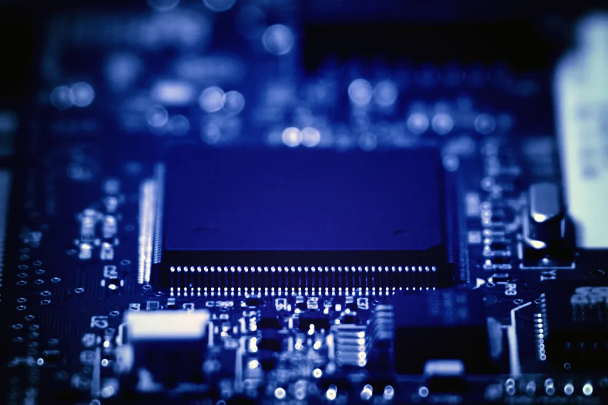
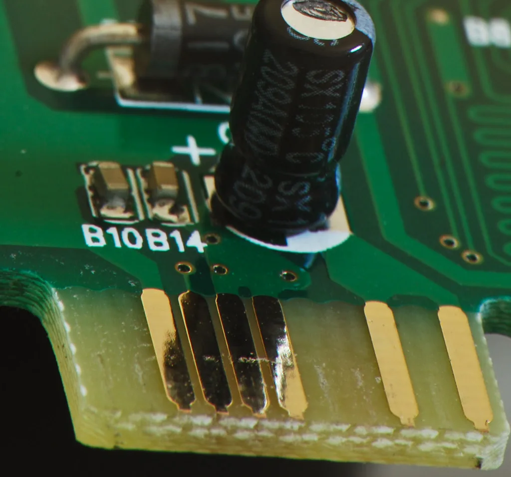

코스피, 中 CXMT 충격에 급락…삼성전자·SK하이닉스 동반 약세
14일 코스피가 개장과 동시에 급락했다. 중국 반도체 기업 창신메모리(CXMT)가 연내 서버용 D램 양산에 들어가겠다고 밝힌 소식이 투자심리를 얼어붙게 하면서, 지수는 장중 한때 5911선까지 밀려났다가 6035선을 회복하는 등 하루 종일 출렁였다. 개장 초반에는 4%대 급락과 함께 6100선이 무너지며 올해 26번째 매도 사이드카가 발동되기도 했다. 코스피가 7000선을 넘나들던 최근 흐름과 비교하면 하루 사이에 분위기가 급변한 셈이다.
이번 급락의 직접적인 계기는 CXMT의 기술 추격 소식이다. CXMT는 이른바 '4F² 공정'을 적용한 차세대 D램을 연말까지 양산하고, 서버용 DDR5 모듈도 선보이겠다는 계획을 내놨다. 중국 메모리 업체가 범용 제품을 넘어 서버·AI용 고부가 D램 시장까지 넘보고 있다는 신호로 받아들여지면서, 국내 반도체 양대 축인 삼성전자와 SK하이닉스 주가가 직격탄을 맞았다. 그동안 중국 업체의 기술 격차가 쉽게 좁혀지지 않을 것이라는 전망이 우세했던 터라, 시장이 받은 충격은 더 컸다는 평가다.

삼성전자와 SK하이닉스는 이날 장중 각각 7%대와 10%대의 급락세를 보였다. 두 회사는 그동안 고대역폭메모리(HBM)와 차세대 D램에서 기술 우위를 지키며 글로벌 메모리 시장을 주도해왔지만, 중국 업체의 추격 속도가 예상보다 빠르다는 우려가 커지면서 투자자들이 일시에 매물을 쏟아낸 것으로 풀이된다. 두 종목의 코스피 내 비중이 큰 만큼 지수 전체가 받은 충격도 상대적으로 컸다.
여기에 외국인 투자자들의 순매도세도 지수 급락을 부추겼다. 최근 AI 인프라 투자를 둘러싼 자금조달 부담과 수익성에 대한 의구심이 반도체 업종 전반에 번져 있던 상황에서, CXMT 소식이 기존의 불안심리에 기름을 부은 모습이다. 이 같은 여진은 국내 증시에만 머물지 않았다. 미국 뉴욕증시에서도 메모리 업체 마이크론 주가가 3%대 하락하며 글로벌 메모리주 전반이 흔들렸다.

외환·원자재 시장에도 영향이 미쳤다. 미국 국채 금리가 내려가고 한동안 18개월 만에 최고치를 기록했던 달러 가치도 주요 물가지표 발표를 앞두고 한발 물러섰다. 국제유가는 미국과 러시아의 공급 확대 기대와 중동 지역의 불안이 뒤섞이며 혼조세를 보였고, 금값도 소폭 내렸다. 증시뿐 아니라 환율과 원자재 가격까지 동시에 출렁이면서 투자자들의 경계감은 한층 높아졌다.
시장에서는 이번 급락이 단기 충격에 그칠지, 메모리 업황에 대한 근본적인 재평가로 이어질지를 주목하고 있다. 삼성전자와 SK하이닉스가 HBM4 등 차세대 제품에서 여전히 기술 격차를 유지하고 있다는 평가가 나오는 반면, 중국 업체가 저가 범용 D램 공급을 늘리며 가격 경쟁을 자극할 수 있다는 우려도 함께 제기된다.
증권가에서는 CXMT의 양산 계획이 실제로 계획대로 진행될지, 또 품질과 수율 면에서 국내 업체를 얼마나 따라잡았는지가 향후 주가 흐름을 가를 핵심 변수가 될 것으로 보고 있다. 코스피가 올해 들어 반도체주를 중심으로 가파른 상승세를 보여온 만큼, 이번 급락이 추가 조정으로 이어질지 반등의 발판이 될지는 이어지는 거래일에서 판가름 날 전망이다.